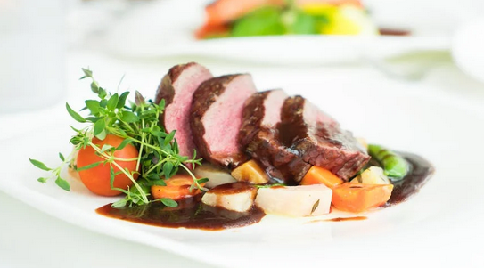

Slow Cooker Roast Beef

A Tender and Juicy Dish Perfect for Any Occasion
Roast beef is a classic dish made by seasoning a beef roast with herbs and spices, then cooking it in the oven until tender and juicy. It's perfect for a special occasion or a comforting family meal.
Ingredients
- 1 cup beef and vegetable broth
- 1 onion stir fried
- 3 garlic cloves
- olive oil
- 1 teaspoons freshly ground black pepper
- 3 pounds beef chuck roast
- 4 potatoes
- 4 carrots
Steps
- Begin by chopping the onion and sauteing it in olive oil in a pan over medium heat until it turns golden brown. This will help to bring out the onion's natural sweetness and add depth of flavor to the stew.
- While the onion is cooking, chop the garlic cloves and beef chuck roast into bite-sized pieces. You can use a sharp knife to do this, or ask your local butcher to prepare the beef for you.
- Once the onion is golden brown, add the chopped garlic and saute for another minute until fragrant. This will add a delicious aroma and flavor to the stew.
- Next, add the chopped beef to the pan and brown it on all sides. This will help to seal in the juices and create a nice crust on the beef.
- While the beef is browning, chop the potatoes and carrots into bite-sized pieces. This will ensure that they cook evenly in the stew.
- Once the beef is browned, transfer everything to a slow cooker. Add the chopped potatoes and carrots, along with the beef and vegetable broth, and ground black pepper.
- Set the slow cooker to cook on high for 12 hours. This will allow all the flavors to meld together and create a delicious, hearty stew.
- After 12 hours, remove the lid and give the stew a good stir. The beef should be tender and the vegetables should be soft.
- Serve the stew hot with a side of crusty bread or crackers. Enjoy the delicious aroma and flavor of this comforting dish!
There you have it - a delicious and easy recipe for slow cooker beef stew that's sure to warm you up on a cold day. Happy cooking!